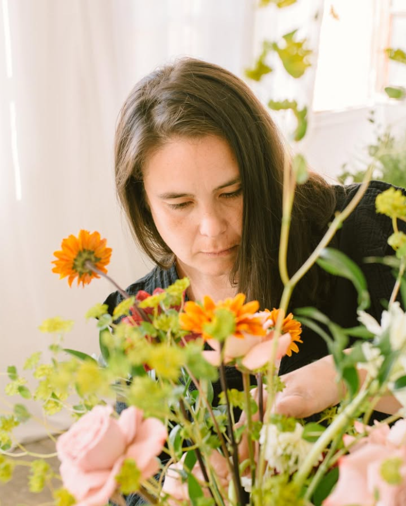
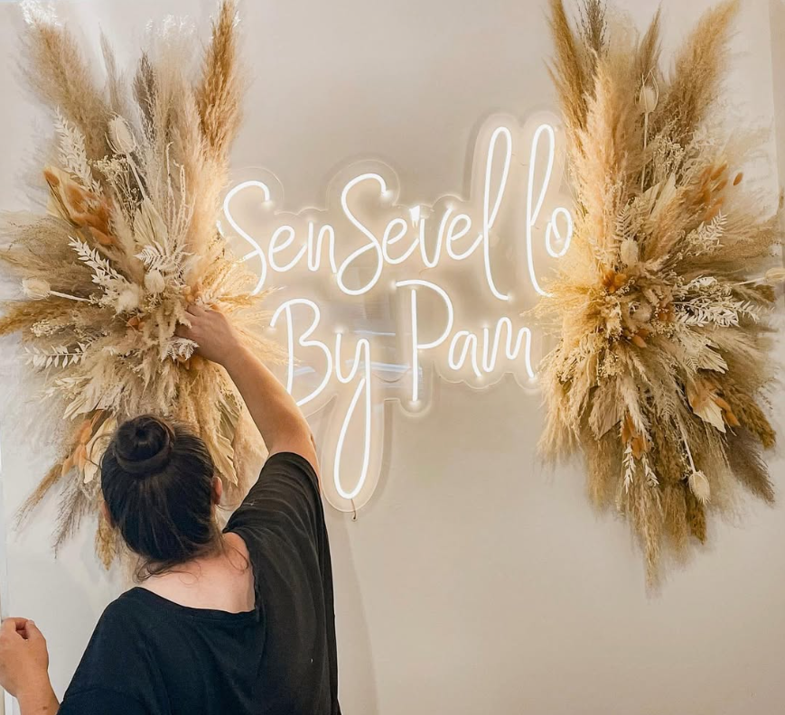

Passió genuïna
Cada arranjament porta una intenció. Treballem amb temps perquè la cura es noti i, sobretot, perquè es recordi.

Floristeria artesanal · Barcelona
Som un petit projecte familiar amb passió per la bellesa natural i el respecte amb l'entorn. Cada flor que cultivem explica una història.

Som un petit projecte familiar nascut de la passió per la bellesa natural. La Dolors, fundadora i florista, porta anys treballant amb flor de temporada i productors locals, convençuda que cada flor carrega una memòria, un paisatge, una intenció.
No tenim grans estocs ni catàlegs tancats. Cada encàrrec comença amb una conversa — volem entendre qui ets i el que vols celebrar — i acaba en un arranjament que sembla que sempre hagi format part d'aquell espai.
Treballem calmadament i amb cura, perquè creiem que la pressa i la bellesa no s'avenen gaire.
— Dolors, fundadora d'Efecto FloralCoses en les quals creiem des del primer dia i que no hem deixat mai d'aplicar.
Cada arranjament porta una intenció. Treballem amb temps perquè la cura es noti i, sobretot, perquè es recordi.
Flor de temporada, productors propers, gestos d'aprofitament. La bellesa surt de la terra — no cal forçar-la.
En l'escollir, en el muntatge, en el lliurament. Quan està ben fet, no cal explicar-ho: la sensació ja ho diu tot.
Sempre comencem amb una conversa. Tu expliques, nosaltres escoltem i proposem.

Dissenyem la decoració floral de la cerimònia i l'àpat escoltant-vos. Volem que les flors del vostre dia reflecteixin qui sou — no una tendència.

Cada celebració és única perquè la persona que es celebra és única. Fem composicions a mida que acompanyen el moment sense eclipsar-lo.

Treballem amb llars, comerços, hotels i restaurants que volen que les flors formin part del seu caràcter, no siguin simplement decoració.
Cada flor que cultivem explica una història
Cada projecte comença amb una conversa sense compromís. Explica'ns qui ets i el que vols celebrar — et donem resposta en pocs dies.